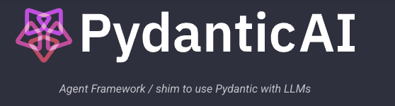

import os
from dotenv import load_dotenv
from pydantic_ai import Agent, RunContext, ModelRetry
from pydantic_ai.models.openai import OpenAIModel # Changed import
from pydantic import BaseModel, Field
from typing import List, Dict, Any, Literal
from datetime import date
from dataclasses import dataclass
from pydantic import ValidationError
import nest_asyncio
nest_asyncio.apply()
# Load environment variables from .env file
load_dotenv()
# Get the OpenAI API key from the environment variable
OPENAI_API_KEY = os.environ.get("OPENAI_API_KEY")
if not OPENAI_API_KEY:
raise ValueError("OPENAI_API_KEY environment variable not set.")
# Initialize our LLM model
model = OpenAIModel(
model_name='gpt-4o-mini',
api_key=OPENAI_API_KEY,
)Introduction: Unleashing the Power of LLMs for Customer Service
Man I was blown away by how simple and effective building agents in pydantic has been for me this weekend.
The promise of AI-powered customer service is finally within reach. This tutorial demonstrates how to build an intelligent customer service agent using Pydantic-AI, a framework that elegantly marries the robustness of Pydantic’s type safety with the sophisticated reasoning capabilities of Large Language Models (LLMs).
This tutorial will show you how to build an intelligent customer service agent using Pydantic-AI, a powerful framework that combines the type safety of Pydantic with the capabilities of Large Language Models (LLMs).
Tired of brittle, hard-coded bots? I’ll guide you through building a complete customer service solution capable of:
- Looking up customer orders: Quickly retrieve order details based on customer ID.
- Handling support tickets: Access and manage customer support requests efficiently.
- Accessing customer information: Securely retrieve customer profiles.
- Processing returns and refunds: Automate return and refund processes.

https://github.com/pydantic/pydantic-ai
1. Setting Up the Development Environment
First, let’s set up our development environment with the necessary dependencies:
pip install pydantic-aiWe’ll also need to install and run Ollama locally for our LLM backend. just use brew install ollama and then download your model of choice.
note: Pydnatic was updated halfway thorugh tihis tutorial and the Ollama model is broken so I had to update the code to use the OpenAI model.
This code snippet does the following:
- Imports Necessary Libraries: Imports modules from pydantic-ai, pydantic, typing, datetime, and dotenv.
- Loads Environment Variables: The load_dotenv() function reads the .env file and sets the environment variables.
- Retrieves API Key: os.environ.get(“OPENAI_API_KEY”) retrieves the API key from the environment.
- Error Handling: It checks if the OPENAI_API_KEY is set and raises a ValueError if it’s missing. This is crucial for preventing your code from running without proper authorization.
- Initializes the LLM: Creates an instance of
OpenAIModel, specifying the model name and API key. You can change themodel_nameto any other OpenAI model you have access to (e.g., ‘gpt-3.5-turbo’, ‘gpt-4’). - Applies nest_asyncio: Applies nest_asyncio to allow the use of asyncio event loops within a Jupyter Notebook environment.
2. Defining Our Data Models
Let’s expand on your initial code to create a more comprehensive data model structure.
Pydantic’s power lies in its ability to define data structures with type annotations. These models not only provide runtime validation but also act as a contract between your code and the LLM. Let’s define our data models:
class Customer(BaseModel):
id: int
name: str
email: str
join_date: date
class OrderItem(BaseModel):
item_id: int
name: str
quantity: int
price: float
class Order(BaseModel):
order_id: int
customer_id: int
items: List[OrderItem]
total: float
status: Literal['pending', 'shipped', 'delivered', 'returned']
order_date: date
class SupportTicket(BaseModel):
ticket_id: int
customer_id: int
order_id: int | None
subject: str
description: str
status: Literal['open', 'in_progress', 'resolved', 'closed']
priority: Literal['low', 'medium', 'high', 'urgent']
created_date: dateExplanation: Data Models
- Customer: Represents a customer with attributes like id, name, email, and join_date. The id is an integer, the name and email are strings, and the join date is a date object.
- OrderItem: Represents an item in an order with item_id, name, quantity, and price.
- Order: Represents a customer order with order_id, customer_id, a list of OrderItem objects, total amount, status, and order_date. The status field uses Literal to enforce that it can only be one of the specified values (‘pending’, ‘shipped’, ‘delivered’, ‘returned’).
- SupportTicket: Represents a support ticket with ticket_id, customer_id, order_id (optional), subject, description, status, priority, and created_date. The priority field is also constrained using Literal.
- order_id: int | None: The use of int | None signifies a union type, indicating that order_id can be an integer or None. This accommodates cases where a support ticket might not be related to a specific order.
Why This Matters: The Benefits of Pydantic Models
- Type Safety: Pydantic enforces type annotations at runtime. If you try to assign the wrong type to an attribute, Pydantic will raise a
ValidationError. This is a huge advantage over dynamically typed languages like Python alone, where type errors might only be caught at runtime. - Auto-completion: Your IDE leverages the type information to provide intelligent code completion, reducing errors and speeding up development.
- Documentation: Pydantic models serve as a form of self-documenting code. The model definitions clearly show the structure and expected data types.
- AI Understanding: The LLM can better understand the structure of your data when it’s defined using Pydantic models. This enables the LLM to generate more accurate and relevant responses.
- Data Validation: Data coming from external sources are validated using the pydantic models.
For this example, we’ll simulate a database using Python dictionaries. In a real-world application, you would likely connect to a real database like PostgreSQL or MySQL.
3. Implementing the Database Layer
Let’s enhance your OrderDatabase class to handle our expanded data models:
class CustomerServiceDatabase:
def __init__(self):
# Simulated database tables
self.customers: Dict[int, Customer] = {}
self.orders: Dict[int, List[Order]] = {}
self.tickets: Dict[int, List[SupportTicket]] = {}
# Initialize with some sample data
self._init_sample_data()
async def get_customer(self, customer_id: int) -> Customer:
if customer_id not in self.customers:
raise ModelRetry(f"Customer not found: {customer_id}")
return self.customers[customer_id]
async def get_orders(self, customer_id: int) -> List[Order]:
if customer_id not in self.orders:
return []
return self.orders[customer_id]
async def get_tickets(self, customer_id: int) -> List[SupportTicket]:
if customer_id not in self.tickets:
return []
return self.tickets[customer_id]
async def create_ticket(self, ticket: SupportTicket) -> SupportTicket:
if ticket.customer_id not in self.customers:
raise ModelRetry("Invalid customer ID")
customer_tickets = self.tickets.get(ticket.customer_id, [])
customer_tickets.append(ticket)
self.tickets[ticket.customer_id] = customer_tickets
return ticket
def _init_sample_data(self):
# Add sample customers, orders, and tickets for testing
self.customers[1] = Customer(id=1, name="Alice Smith", email="alice.smith@example.com", join_date=date(2024, 1, 15))
self.orders[1] = [
Order(order_id=101, customer_id=1, items=[OrderItem(item_id=201, name="Laptop", quantity=1, price=1200.00)], total=1200.00, status="shipped", order_date=date(2024, 11, 10)),
Order(order_id=102, customer_id=1, items=[OrderItem(item_id=202, name="Keyboard", quantity=1, price=75.00)], total=75.00, status="delivered", order_date=date(2024, 11, 15))
]
self.tickets[1] = [
SupportTicket(ticket_id=301, customer_id=1, order_id=101, subject="Shipping Issue", description="Laptop never arrived", status="open", priority="high", created_date=date(2024, 12, 1))
]Explanation: The Database Layer
- init: Initializes the database with three dictionaries: customers, orders, and tickets. It also calls _init_sample_data() to populate the database with some initial data.
- get_customer: Retrieves a customer by customer_id. If the customer is not found, it raises a ModelRetry exception. This is how pydantic-ai handles function calling that does not find a response.
- get_orders: Retrieves all orders for a given customer_id. Returns an empty list if no orders are found.
- get_tickets: Retrieves all support tickets for a given customer_id. Returns an empty list if no tickets are found.
- create_ticket: Creates a new support ticket. It checks if the customer_id is valid before creating the ticket.
- **init_sample_data:** Populates the database with sample data for testing purposes. This includes a customer, some orders, and a support ticket. This method is prefixed with an underscore () to indicate that it’s a private method intended for internal use within the class.
- ModelRetry Exception: The use of the ModelRetry exception allows the agent to retry a function call if it fails. In the get_customer and create_ticket functions, the ModelRetry is raised if the user cannot be found in the system. This is useful in cases where the agent may hallucinate data that does not exist in the real world.
4. Building the Agent Tools
Now, let’s define the agent and equip it with tools to interact with our simulated database.
@dataclass
class CustomerServiceDeps:
customer_id: int
db: CustomerServiceDatabase
class CustomerServiceResult(BaseModel):
customer_id: int
customer_info: Customer | None = None
orders: List[Order] = Field(default_factory=list)
tickets: List[SupportTicket] = Field(default_factory=list)
message: str = Field(default="")
# Create the customer service agent
customer_service_agent = Agent(
model=model,
deps_type=CustomerServiceDeps,
result_type=CustomerServiceResult,
retries=2,
system_prompt="""You are a customer service assistant with access to customer data,
orders, and support tickets. Help customers by providing accurate information and
creating support tickets when needed."""
)# Define agent tools
@customer_service_agent.tool
async def get_customer_info(ctx: RunContext[CustomerServiceDeps]) -> Customer:
"""Fetch customer information based on their ID."""
return await ctx.deps.db.get_customer(ctx.deps.customer_id)
@customer_service_agent.tool
async def get_customer_orders(ctx: RunContext[CustomerServiceDeps]) -> List[Order]:
"""Fetch all orders for a customer."""
return await ctx.deps.db.get_orders(ctx.deps.customer_id)
@customer_service_agent.tool
async def get_support_tickets(ctx: RunContext[CustomerServiceDeps]) -> List[SupportTicket]:
"""Fetch all support tickets for a customer."""
return await ctx.deps.db.get_tickets(ctx.deps.customer_id)
@customer_service_agent.tool
async def create_support_ticket(
ctx: RunContext[CustomerServiceDeps],
subject: str,
description: str,
priority: Literal['low', 'medium', 'high', 'urgent'],
order_id: int | None = None
) -> SupportTicket:
"""Create a new support ticket for the customer."""
ticket = SupportTicket(
ticket_id=len(ctx.deps.db.tickets.get(ctx.deps.customer_id, [])) + 1,
customer_id=ctx.deps.customer_id,
order_id=order_id,
subject=subject,
description=description,
status='open',
priority=priority,
created_date=date.today()
)
return await ctx.deps.db.create_ticket(ticket)Explanation: Agent Definition and Tools
- CustomerServiceDeps: This dataclass holds the dependencies required by the agent. In this case, it needs a customer_id and a CustomerServiceDatabase instance.
- CustomerServiceResult: This Pydantic model defines the structure of the data that the agent will return. It includes the customer_id, optional customer_info, a list of orders, a list of tickets, and a message field to return a response to the user. Using a Pydantic model for the results gives the LLM a schema to follow.
- Agent: The
Agentclass frompydantic-aiis the core component.- model: Specifies the LLM to use (in this case, the
OpenAIModelinstance we created earlier). - deps_type: Specifies the type of dependencies the agent needs (defined by CustomerServiceDeps).
- result_type: Specifies the type of the result that the agent will return (defined by CustomerServiceResult).
- retries: Sets the number of times the agent will retry a tool if it fails.
- system_prompt: A crucial part of agent design. This prompt instructs the LLM on its role, capabilities, and how it should behave. A well-crafted system prompt is essential for getting the desired behavior from the agent.
- model: Specifies the LLM to use (in this case, the
- @customer_service_agent.tool: This decorator registers a function as a tool that the agent can use.
- get_customer_info: Fetches customer information from the database.
- get_customer_orders: Fetches all orders for a customer.
- get_support_tickets: Fetches all support tickets for a customer.
- create_support_ticket: Creates a new support ticket. It takes subject, description, and priority as arguments. The order_id is optional. The ticket_id is automatically generated based on the number of existing tickets for the customer.
- RunContext: Each tool function receives a RunContext object that provides access to the agent’s dependencies (
ctx.deps) and other information about the current run. - Docstrings: The docstrings for each tool are critical.
pydantic-aiuses these docstrings to tell the LLM what the tool does. Make them clear and concise. - Tool Parameters: The parameters specified in the create_support_ticket function are passed to the LLM. This enables the LLM to use the tool effectively.
- Return Type Annotations: Make sure to add type annotations so that the model understands the data the function returns.
5. Orchestrating Customer Inquiries with handle_customer_inquiry
The handle_customer_inquiry function is responsible for taking a customer inquiry and routing it to the agent.
async def handle_customer_inquiry(
customer_id: int,
inquiry: str,
db: CustomerServiceDatabase
) -> CustomerServiceResult:
deps = CustomerServiceDeps(customer_id=customer_id, db=db)
try:
result = await customer_service_agent.run(
inquiry,
deps=deps
)
return result.data # Access the data attribute
except ValidationError as e:
print(f"Validation error: {e}")
raise
except ModelRetry as e:
print(f"Retryable error: {e}")
raiseExplanation: Handling Customer Inquiries
- Dependencies: Creates an instance of
CustomerServiceDepswith the providedcustomer_idanddb. agent.run: Calls therunmethod on thecustomer_service_agentto process the inquiry. It passes the inquiry string and the dependencies.- Error Handling:
ValidationError: Catches Pydantic validation errors that may occur during the agent’s execution. This could happen if the LLM returns data that doesn’t conform to the expected Pydantic models.ModelRetry: CatchesModelRetryexceptions that are raised by the database layer if a customer is not found or if there’s an issue creating a ticket.Exception: A catch-all for any other exceptions that might occur. It’s generally good practice to catch specific exceptions rather than a broadExceptionto handle errors more precisely.
- Returns
CustomerServiceResult: Returns theCustomerServiceResultobject containing the agent’s response. The LLM will call the tools and the function returns the result.
6. Putting it All Together: Running a Customer Inquiry
Let’s create an instance of our database and simulate a customer inquiry.
import asyncio
db = CustomerServiceDatabase()
# Example customer inquiry
inquiry = "I'd like to know the status of my recent orders and if there are any open support tickets."
async def run_inquiry():
try:
deps = CustomerServiceDeps(customer_id=1, db=db) # Create dependencies
result = await handle_customer_inquiry(
customer_id=1,
inquiry=inquiry,
db=db
)
print(f"Customer Info: {result.customer_info}")
print(f"Orders: {result.orders}")
print(f"Tickets: {result.tickets}")
print(f"Response: {result.message}")
except Exception as e:
print(f"Error handling inquiry: {e}")
# Run the asynchronous function
asyncio.run(run_inquiry())Customer Info: id=1 name='Alice Smith' email='alice.smith@example.com' join_date=datetime.date(2024, 1, 15)
Orders: [Order(order_id=101, customer_id=1, items=[OrderItem(item_id=201, name='Laptop', quantity=1, price=1200.0)], total=1200.0, status='shipped', order_date=datetime.date(2024, 11, 10)), Order(order_id=102, customer_id=1, items=[OrderItem(item_id=202, name='Keyboard', quantity=1, price=75.0)], total=75.0, status='delivered', order_date=datetime.date(2024, 11, 15))]
Tickets: [SupportTicket(ticket_id=301, customer_id=1, order_id=101, subject='Shipping Issue', description='Laptop never arrived', status='open', priority='high', created_date=datetime.date(2024, 12, 1))]
Response: Explanation: Running the Inquiry
- Create Database Instance: Creates an instance of the
CustomerServiceDatabase. - Define Inquiry: Defines a sample customer inquiry.
async run_inquiry(): This function encapsulates the asynchronous operations.- Call
handle_customer_inquiry: Calls thehandle_customer_inquiryfunction with the customer ID, inquiry, and database instance. - Print Results: Prints the customer information, orders, tickets, and the agent’s response.
- Error Handling: Catches any exceptions that occur during the process and prints an error message.
6. Error Handling and Validation
The agent includes built-in error handling for common scenarios: - Invalid customer IDs - Missing orders or tickets - Validation errors in data models - Retry logic for transient failures
7. Testing the Agent
Here’s a basic test suite for our customer service agent: Testing is crucial to ensure the reliability of your agent. Here’s a basic test suite to verify some core functionalities. Note: This requires you to have pytest and pytest-asyncio installed.
import pytest
from datetime import date
@pytest.mark.asyncio
async def test_customer_lookup():
db = CustomerServiceDatabase()
# Add test customer
db.customers[1] = Customer(
id=1,
name="Test Customer",
email="test@example.com",
join_date=date.today()
)
result = await handle_customer_inquiry(
customer_id=1,
inquiry="What is my customer information?",
db=db
)
assert result.customer_info is not None
assert result.customer_info.id == 1
@pytest.mark.asyncio
async def test_order_lookup():
db = CustomerServiceDatabase()
# Add test order
db.orders[1] = [
Order(
order_id=1,
customer_id=1,
items=[
OrderItem(
item_id=1,
name="Test Item",
quantity=1,
price=99.99
)
],
total=99.99,
status="shipped",
order_date=date.today()
)
]
result = await handle_customer_inquiry(
customer_id=1,
inquiry="What are my recent orders?",
db=db
)
assert len(result.orders) > 0
assert result.orders[0].order_id == 1Explanation: Testing the Agent
- @pytest.mark.asyncio: This decorator marks the test functions as asynchronous, allowing you to use await inside them. This is essential for testing asynchronous code.
- test_customer_lookup: This test verifies that the agent can correctly retrieve customer information.
- It creates a new CustomerServiceDatabase instance.
- It adds a test customer to the database.
- It calls handle_customer_inquiry with a query asking for customer information.
- It asserts that the customer_info field in the result is not None and that the customer ID matches the expected value.
- test_order_lookup: This test verifies that the agent can correctly retrieve customer orders.
- It creates a new CustomerServiceDatabase instance.
- It adds a test order to the database.
- It calls handle_customer_inquiry with a query asking for recent orders.
- It asserts that the orders list in the result is not empty and that the order ID of the first order matches the expected value.
This tutorial has demonstrated how to build an intelligent customer service agent using pydantic-ai and LLMs. By leveraging Pydantic’s type safety and the power of LLMs, you can create robust, reliable, and intelligent customer service solutions. This example provides a strong foundation for building more complex and sophisticated agents that can automate a wide range of customer service tasks. Remember to refine your system prompt, add more tools, and implement comprehensive testing to build a production-ready solution.